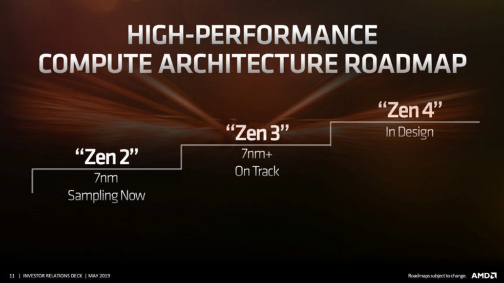

AMD es conocida no solo por sus productos si no también por sus procesadores más que todos los ryzen que son conocida como las más potente hasta ahora, la razón es su recalentamiento, ya que su trabajo es dar un bueno rendimiento tanto en velocidad y rapidez para que puede trabajar mejor el dicho procesador.
Ya AMD le ha ganado a Intel ante sus procesadores y aún lo sigue haciendo, pero, cual es la gran diferencia de hoy en día que lleva un buen tiempo ya ha sobrepasado los límites de los procesadores de Intel, por que AMD tiene la posibilidad de hacerlo mejor a sus procesadores actuales gracias a la tecnología de nanómetro.
Se espera que Zen 3 sea la última microarquitectura antes de que AMD cambie a memoria DDR5 y nuevos sockets. (Mas avance para para los procesadore de AMD) eduzca el consumo de energía en un 10% y ofrezca un aumento de hasta el 20% en la densidad del transistor . Esto también permitiría velocidades de reloj más altas con el mismo consumo de energía. [4] AMD ha aclarado que no se referían a ningún proceso específico con "7nm +" y que estarían utilizando una versión mejorada de 7nm (N7), que incluye la posibilidad del proceso de DUV ( ultravioleta profundo )
Se estima por la siguiente razón: La razón principal de este retraso podría ser la falta de competencia de Intel, y la fuerte demanda de la actual serie de CPU Ryzen 3000. Las fuentes de DigiTimes han sido muy confiables en el pasado, así que esto podría resultar cierto.
Siguenos en Facebookpara mas novedades de AMD E INTEL asi que no te lo pierdas.
Quizas te puede interesar Este video